Call for Contributions
We hereby invite you to contribute to the symposium with an extended abstract or pictorial. The extended abstract should be three to five pages (including references) or 1 500 – 2 000 words. The pictorial should be up to eight pages and up to 1 000 words. Submit your contribution before the 4th of September 2026. Submit your contribution, including links to audiovisual media repositories or media files, via the symposium submission system TBA.
We encourage late-breaking and pioneering works, including emerging contributions that stimulate dialogue and inspire new ideas. Submissions may include early-stage research, technical explorations, preliminary findings, concise studies, artistic works, or theoretical and methodological reflections. We welcome a wide range of topics and formats, such as original technologies, artistic etudes, or designs in development, selected results from ongoing studies, critical reflections on early research, fresh analyses of existing work, and open contributions seeking feedback, engagement, and collaboration.
The Audiovisual Symposium explores what characterises the research, education and artistic practice of audiovisual studies. Research described with the adjective audiovisual extends into a wide range of areas, in the humanities, social sciences, arts and technology. This includes related academic disciplines such as film studies, screen play composition, musicology, music, visual arts, performing arts, design, cultural studies, media technology, audio design, and interaction design including new instruments for audiovisual expressions.
Open peer review
We apply open peer review. Authors and reviewers are not anonymous, and the entire review process is based on openness and collegial dialogue. By submitting a contribution, authors commit to conduct two peer reviews of other contributions.
The process after submission
- Submitted contributions are assigned two reviews.
- The reviewers submit written non-anonymous reports via the submission system.
- Authors can participate in an open dialogue phase and submit revised versions.
- The programme committee makes decisions based on reports and revisions.
Through open peer review, we want to strengthen the transparency, openness and quality of our joint work.
Important dates
Submission deadline 4th of September 2026.
Review due date 18th of September 2026.
Acceptance date 9th of October 2026.
Camera ready version date 16th of October 2026.
Audiovisual Symposium date Thursday 26 to Friday 27 November 2026.
Contact
Questions regarding the call for papers, or get involved with volunteering and partnerships, please contact us. avs2026@liu.seEmail: avs2026@liu.se
Sponsors

Immersive Sweden is a national innovation platform dedicated to advancing immersive, spatial, and interactive media across research, industry, and the creative sectors. As a sponsor of the Audiovisual Symposium 2026, Immersive Sweden supports critical dialogue, experimentation, and collaboration at the forefront of audiovisual innovation in Sweden and beyond.

Visual Sweden is a leading Swedish innovation cluster bringing together industry, academia, and public actors to advance visualization, visual media, and applied visual technologies. Through collaboration, research, and innovation, Visual Sweden strengthens cutting‑edge audiovisual practices and sustainable growth in the visual sector.